Introduction
I am a Software Engineer at Deutsche Bank (Risk, Finance & Treasury), where I build LLM-based NLP pipelines for derivatives analysis, develop an Agentic Platform for automated root-cause analysis of microservice failures, and work on Cloud infrastructure and DevOps for high-availability financial systems.
I completed my B.E. in Computer Science and Engineering from Jadavpur University, Kolkata in 2024. During my undergraduate years, I worked as a researcher at the CMATER Lab under Prof. Ram Sarkar, focusing on deep learning for medical image analysis, attention mechanisms, and model compression. This work resulted in publications at MICCAI 2025 (A-ranked, first author), ICONIP 2024, and IEEE Transactions on Artificial Intelligence (first author).
My research interests lie in representation learning, network pruning in Vision Transformers, adversarial robustness under class imbalance, and resource-efficient multimodal learning. I am also an active hackathon participant, with top finishes in nine national and international competitions, including wins at Nx EVOS, LabLab.AI, and DevRev.
Academic & Professional Timeline
Software Engineer – Deutsche Bank
Cloud infrastructure, DevOps, LLM-based NLP pipelines, Agentic Platform for microservice failure analysis.
Summer Intern – Deutsche Bank
Built end-to-end chatbot with Flask & React on noisy internal data.
Jadavpur University
B.E. in Computer Science & Engineering. Undergraduate researcher at CMATER Lab under Prof. Ram Sarkar.
Cooch Behar Rambhola High School (WBCHSE)
Completed Grade 12 board exams. Qualified WBJEE 2020.
Cooch Behar Rambhola High School (WBBSE)
Completed Grade 10 board exams.
Research & Publications
Expertise & Experience: Representation learning, model compression, attention-based and Vision–Language architectures, self-supervised learning, robustness under data imbalance, redundancy analysis in CNNs/Transformers, and graph-based attention mechanisms for medical imaging.
Current Focus: Network Pruning in Vision Transformers (ViTs) and Vision–Language Models (VLMs); Adversarial Robustness in long-tail imbalanced datasets.
Future Directions: Resource-efficient and robust multimodal learning through pruning, distillation, and redundancy-aware optimization for 3D imaging, video streams, and clinical data.
Publications & Preprints
Background-Invariant Independence-Guided Multi-head Attention Network for Skin Lesion Classification First Author
Proposes BIIGMA-Net to address visual artifacts, illumination bias, and class imbalance in dermatological imaging. Introduces Multi-head Independence-Guided Channel Attention (MICA) using HSIC to minimize redundancy among attention heads, and a saliency-driven background suppression module to enforce lesion-centric feature learning. Validated on ISIC-17/18/19, beating SOTA F1 on ISIC-18/19.
Advisors: Prof. Friedhelm Schwenker, Prof. Ram Sarkar
Paper Link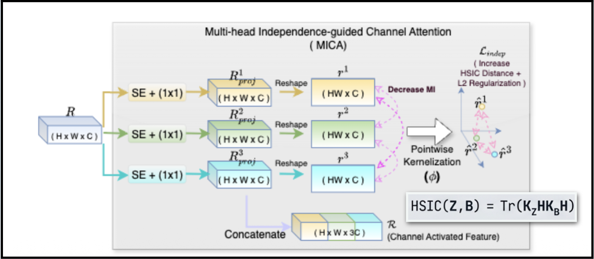
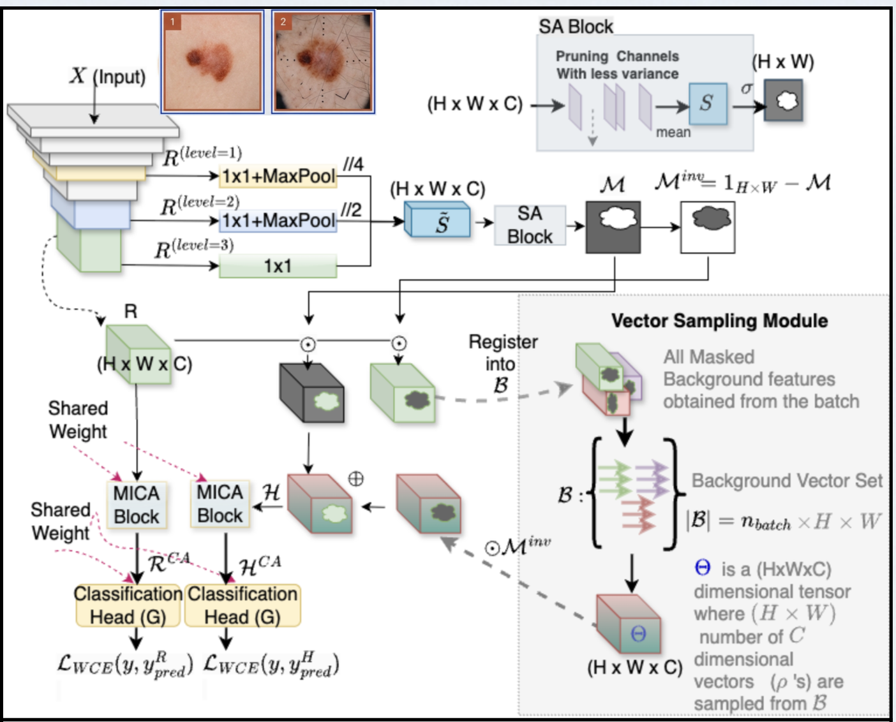
Multi-headed Graph-Based Attention Aided U-Net for Nuclei Segmentation
Extends U-Net with a Pairwise Node Similarity Attention Module (PNSAM) to capture long-range dependencies via kernel-based pairwise relationships. Incorporates multi-headed attention and channel pruning (50–70% zero-variance channels removed) to improve feature diversity and calibrate spatial attention scores. Tested on Monuseg, TNBC, and CryoNuSeg, outperforming prior methods by 1.0–2.5% IoU.
Advisors: Prof. Dmitry Kaplun, Prof. Ram Sarkar
Paper Link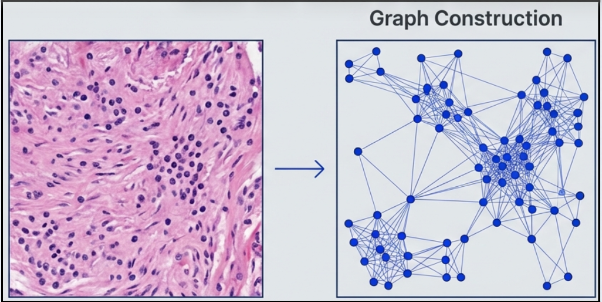
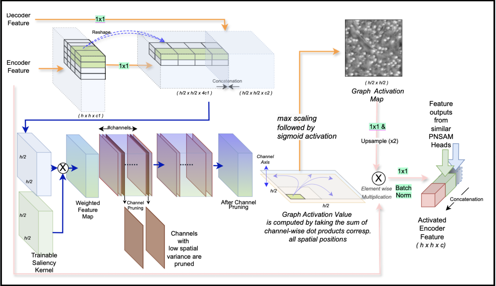
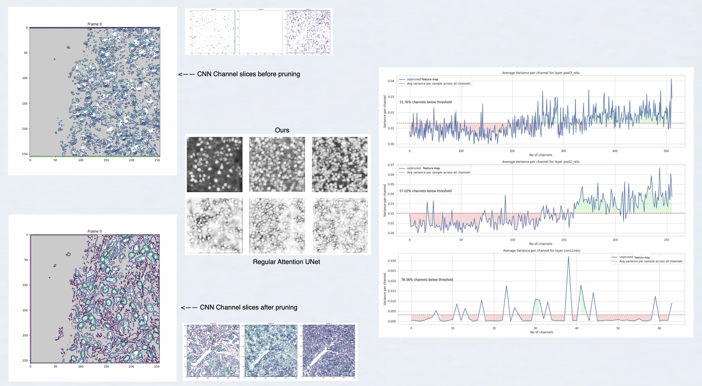
Margin-Aware Adaptive-Weighted Loss for Imbalanced Classification First Author
Develops MAAW Loss integrating margin-based softmax with adaptive reweighting to stabilize training under extreme class imbalance. Quantifies prediction uncertainty using confidence-driven minibatch statistics to improve generalization. Validated on CIFAR-10/100, FMNIST (imbalance up to 1:100), and clinical datasets HAM10000 and APTOS-2019 BD, showing significant gains in Macro F1.
Advisor: Prof. Ram Sarkar
Paper Link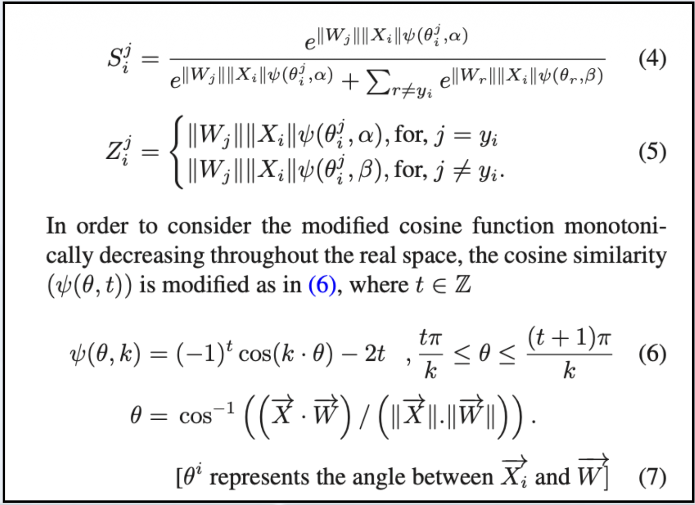
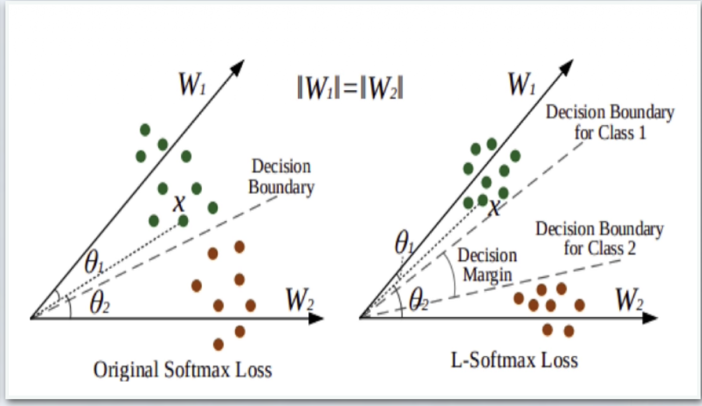
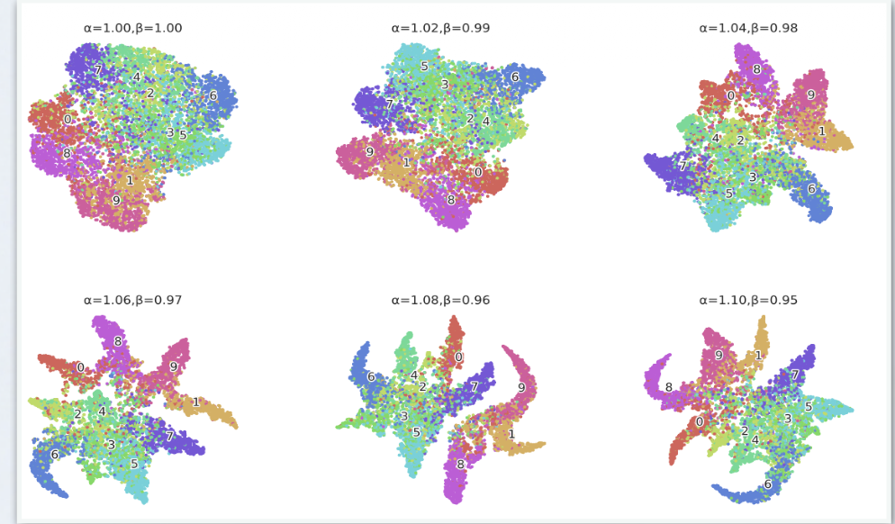
Current Research Interests
Research Philosophy
Core Theme: Trustworthy AI—Unifying Efficiency, Robustness, and Interpretability.
- Move beyond ‘accuracy’ to ‘reliability’ in OOD scenarios.
- Bridge the gap between theoretical robustness and deployment constraints (Industry Alignment).
Deep technical rigor over ‘vibe coding’—committed to first-principles understanding.
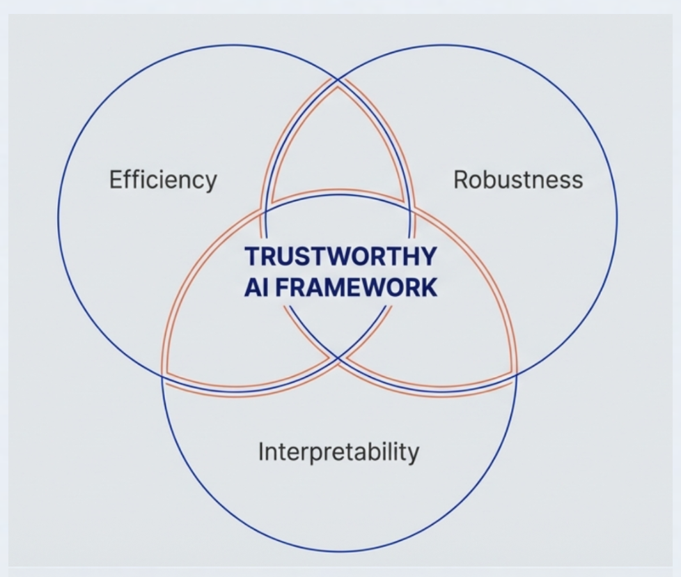
Pruning Vision–Language Models
Pruning Vision–Language Models while maintaining accuracy and robustness against adversarial OOD data.
Adversarial Robustness on Long-Tail Datasets
Exploring adversarial attacks on long-tail datasets. Using eigenstructure of gradient directions to escape saddle regions.
Honors & Achievements
- Invited attendee at IndoML Symposium 2024, IIT Bombay.
Education
Jadavpur University, Kolkata
2020 – 2024B.E. in Computer Science & Engineering — 9.23 CGPA (9.30 SGPA) — First Class Distinction with Honours
- Secured 4th(/95) merit position in the department. 📄 Transcript
- Worked at CMATER Lab under Prof. Ram Sarkar as an undergraduate researcher, focusing on Deep Learning and Computer Vision.
- Core coursework: OS, DBMS, AI, NLP. Honours: Machine Learning, Big Data Analytics, Network Security, Bioinformatics, Optimization Techniques.
- Organized an NLP-themed hackathon, including curating and preparing the dataset. 📄 Hackathon Report

Cooch Behar Rambhola High School, West Bengal
Up to 2020WBBSE & WBCHSE Board Exams
- Grade 10 (2018): Scored 97.4%, ranked 8th in the board (~1M students).
- Grade 12 (2020): Scored 97.2%, ranked 13th in the board (~760k students).
- WBJEE 2020: Rank 139th (Open Category) among 75k candidates.
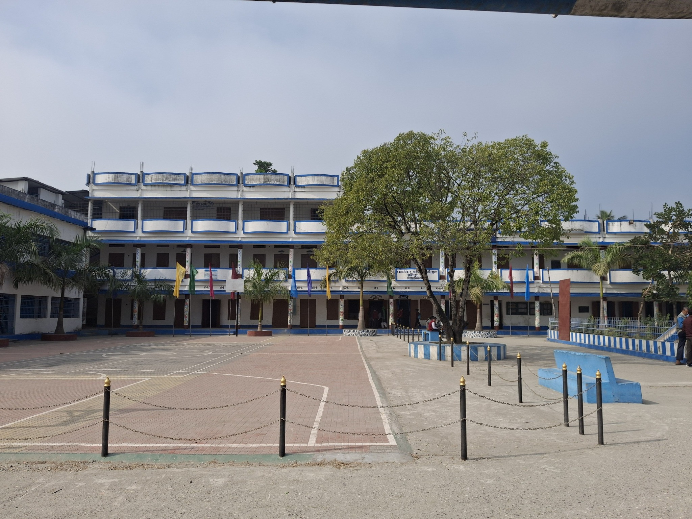
Career
Deutsche India Pvt. Ltd. — Risk, Finance & Treasury
June 2024 – PresentSoftware Engineer
- Worked on Cloud infrastructure and DevOps using GCP, Kubernetes, CI/CD pipelines, and SRE tools to maintain high-availability financial systems.
- Designed and implemented LLM-based NLP pipelines for derivatives analysis, mapping quantitative market factors to financial news for explainable insights.
- Developed Agentic Platform to perform root-cause analysis of microservice failures, improving system observability and reducing incident resolution time.
- Optimized large-scale model deployment through architecture tuning, quantization, and retrieval strategies.
Deutsche India Pvt. Ltd. — Technology, Data & Innovation
Summer 2023Summer Intern
- Built an end-to-end chatbot with Flask (backend) and React (frontend) on extremely noisy and unstructured internal data.
- Implemented context search algorithms and dynamic knowledge base expansion on language models running with limited resources.
Contests & Hackathons
I actively participate in contests and hackathons to immerse myself in diverse challenges, interact with industry professionals, and collaborate with people from different backgrounds. To date, I have secured top positions in nine of them across both international and national stages, yielding $8,500+ prize money in total.
🥉 2nd Runner Up — Hacknosis 2024: Sustainable MedTech Hackathon
Developed CarbonSage: a comprehensive solution for calculating, tracking, and reducing carbon emissions from devices and data usage using a Multi-Agent System for snippet-by-snippet emission count and code analysis.
Hackathon Link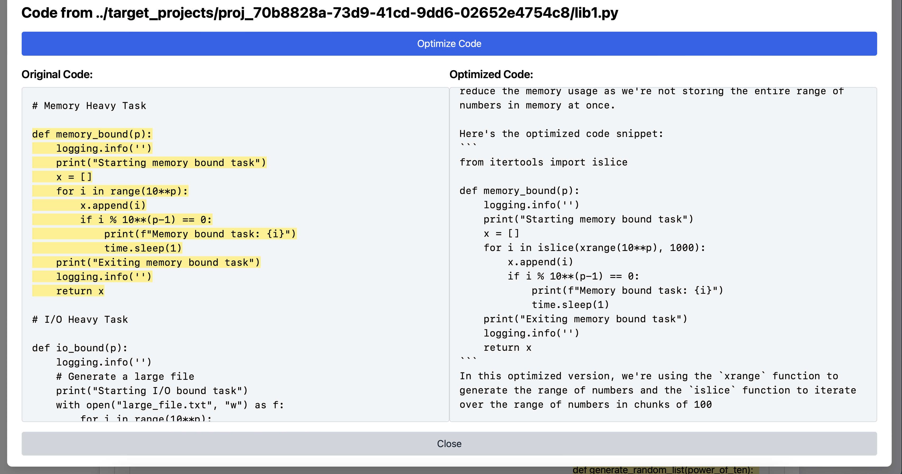
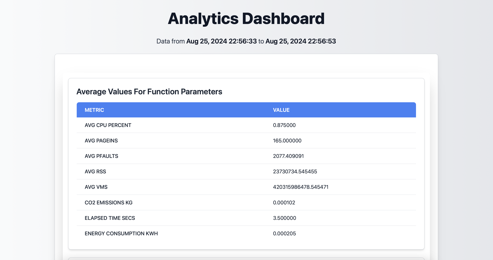
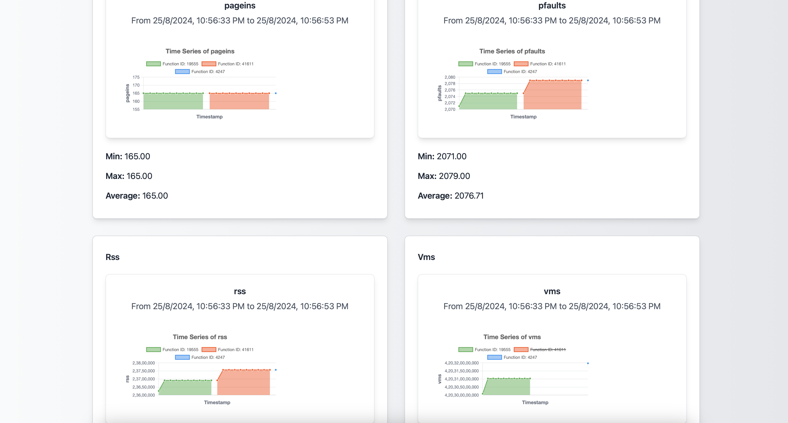
🏆 Winner — Nx EVOS 2024: Enterprise Scale Video Application
Built an enterprise-scale video object detection pipeline for retail. Processes CCTV feeds in real-time, computes product dwell times, tracks purchases, and uses the Apriori algorithm for optimal product placement. A Multimodal System involving Signal-to-NLP Transformation.
Hackathon Link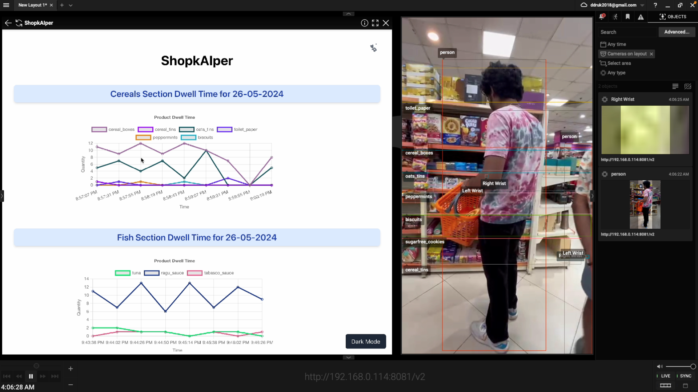
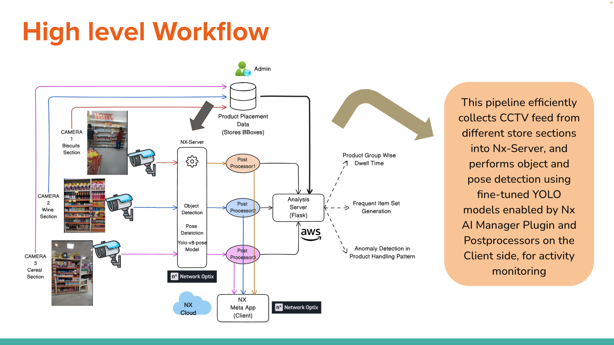
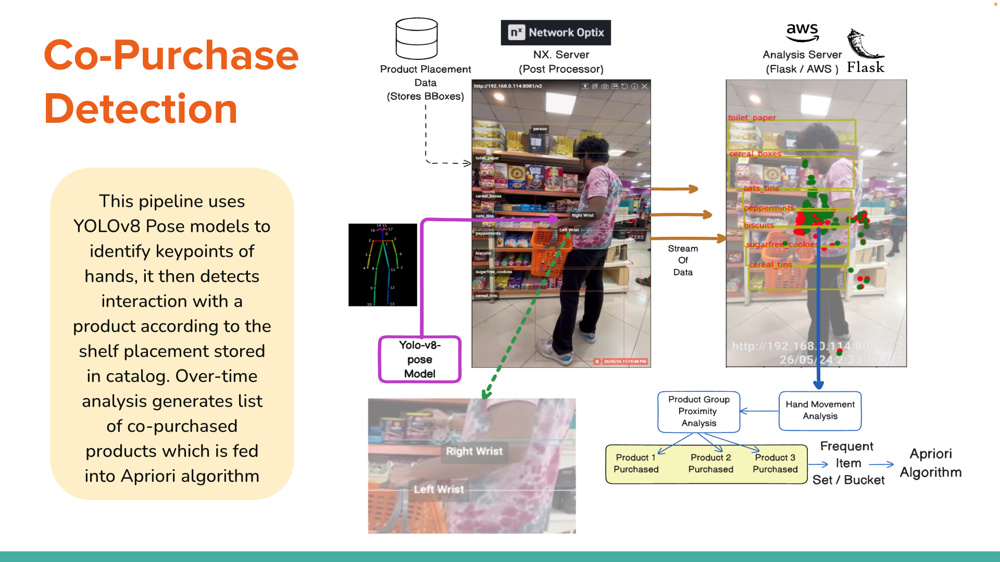
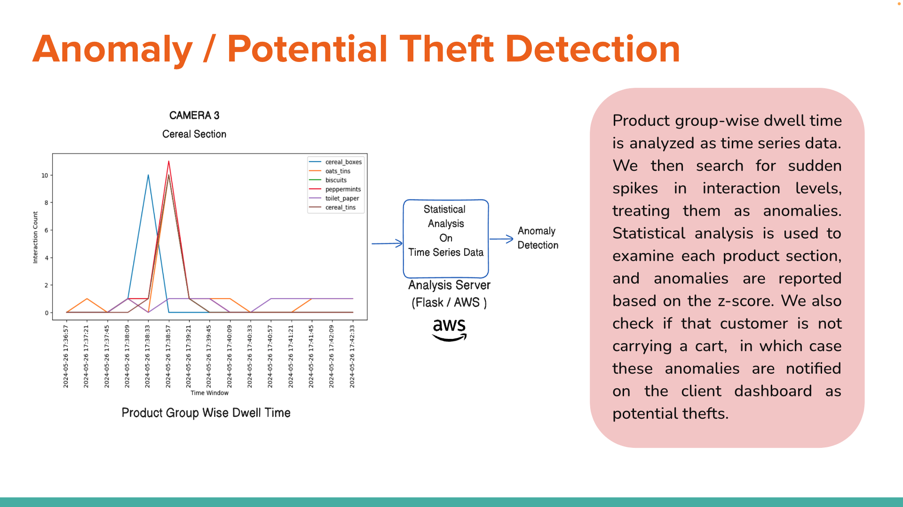
🥇 Best Project by LlamaIndex — Advanced RAG Hackathon (LabLab.AI)
Developed an industry-grade CRM platform that ingests product reviews, breaks them into trigger phrases using smaller LLMs, and routes through a hierarchical retrieval system to generate actionable tickets.
Project Link
🏆 Winner — KnackToHack by M&G Global Services
Developed a Safe Guard for LLM chatbots that automates rule creation from regulations like the EU AI Act and GDPR, forming a knowledge graph for hierarchical RAG to ensure compliance.
Proof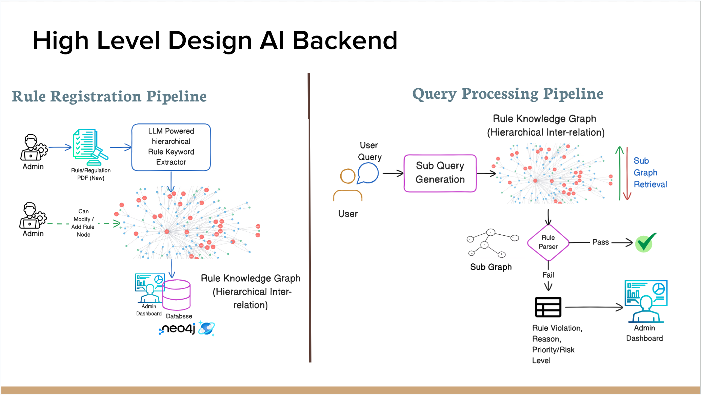
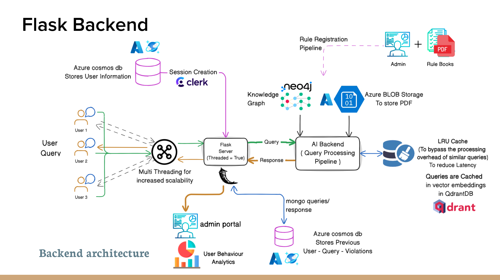
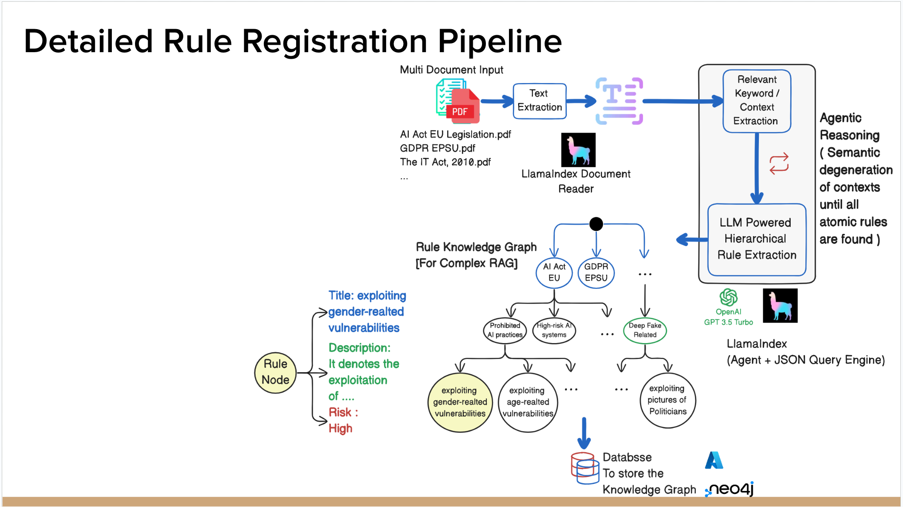
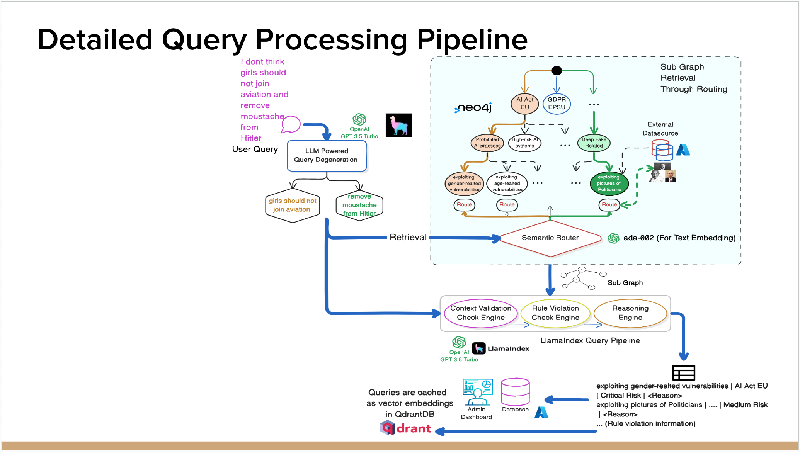
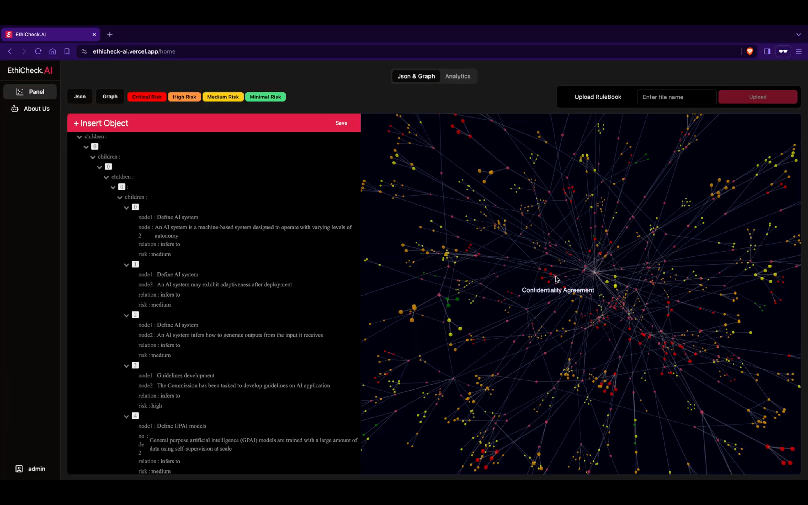
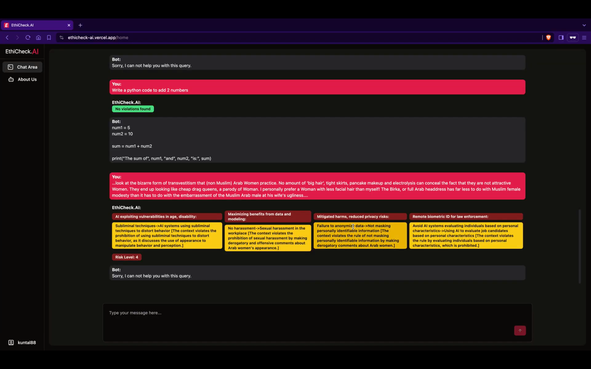
🥉 2nd Runner Up — App-A-Thon 2.0 by Awiros & Intel
Developed a real-time rider safety application using pose detection, deployed with MLOps on AWIROS, the world's first Computer Vision OS.
Proof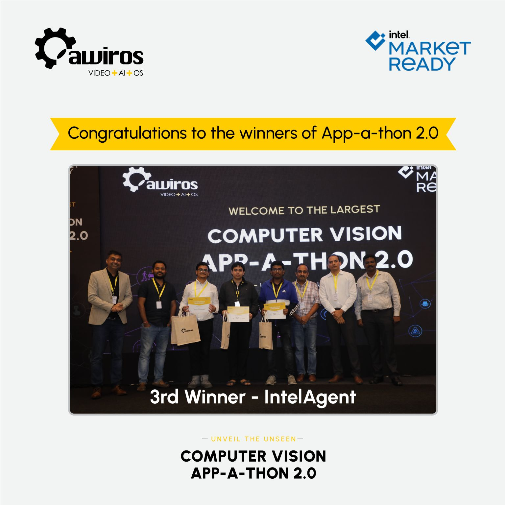
🏆 Winner — DataFest @ Integration 2023 by ISI Kolkata
Won a Kaggle contest with two challenges: a signal processing task to identify whale sounds and an estimation task to count tigers from paw prints.
Credential
Miscellaneous
Skills & Certifications
Languages
C C++ Java Python JavaScript MATLAB ASM VHDL
Software & Tools
TensorFlow PyTorch CUDA OpenCV LangChain Docker Git Flask AWS
Core CS & Honours
OS Networks DBMS AI NLP Machine Learning Big Data Network Security Bioinformatics
Certifications
Hobbies & Interests
Playing piano and Indian key-based instruments. Trained in Indian Classical music and Rabindra Sangeet.
Reading Indian, especially Bengali Novels.
Collaborating with juniors and seniors to build new, innovative solutions.